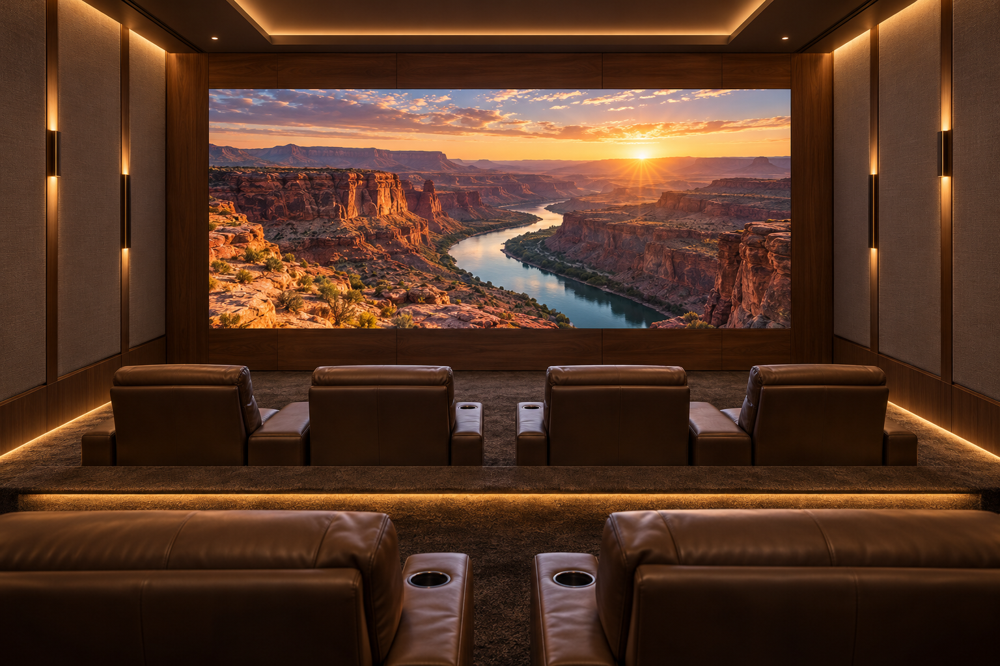
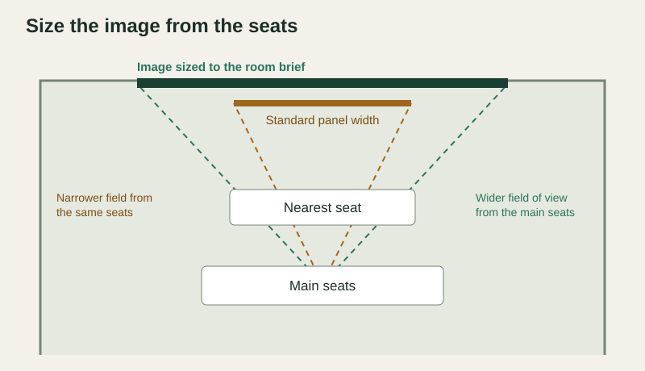

In a large home theater, the choice between MicroLED and OLED usually comes down to the image size the room needs. An OLED display is built as a single panel in the sizes and shapes its maker produces, which suits many media rooms well. A MicroLED wall is assembled from cabinets, so the image can be sized and shaped to the room, the seating and the architecture. Both are self-emissive, meaning each pixel produces its own light. Start with the image width you want from the main seats, the detail the nearest seat needs, the room’s light and your content. An authorized dealer can then show how each approach meets that brief.
Start with the image the room needs
Measure the main seating distance and decide how much of your view the picture should fill. A dedicated cinema often calls for a wider image than a living room, and a wider image changes how close the nearest seat can comfortably sit. Our guide to sightlines, viewing distance and seating covers that geometry in detail.

A standard panel size can be exactly right for a media room or a smaller theater. The question for a large room is whether the available sizes give the main seats the image you want, or whether the room calls for a wall sized to its own dimensions.
How the two approaches are built
OLED stands for organic light-emitting diode. The U.S. Department of Energy’s overview of OLED basics explains that its light-emitting layer is made from carbon-based materials. An OLED display is manufactured as one panel, so its size and aspect ratio come from the product range on offer.
MicroLED uses inorganic LEDs as the pixels. Our walls are assembled from 600 by 337.5 millimeter cabinets that tile together without bezels, so the finished image can be sized to the room and set to a standard or custom aspect ratio. Our guide to custom aspect ratios shows what that flexibility makes possible in a theater.
Compare the room requirements
Use this matrix with your design team. It frames the questions each approach should answer for your room, without assuming one category is right for every project.
| Room requirement | Questions for a standard-size OLED display | Questions for a modular MicroLED wall |
|---|---|---|
| Image width and shape | Is an available panel size large enough for the main seats? | Which cabinet layout gives the width and aspect ratio the room needs? |
| Nearest-seat detail | Does the panel’s resolution hold up from the nearest seat? | Which pixel pitch keeps the image smooth from the nearest seat? |
| Room light | How does the picture hold up with the room’s lighting during daytime use? | How do brightness and the BlackFire anti-glare surface perform under the room’s lighting? |
| Static content | What does the maker advise for artwork, menus or graphics left on screen for long periods? | Which content will stay on screen for long periods, and how will those scenes be controlled? |
| Source formats | Which input modes does the display accept at its full resolution? | Which input modes do the selected series and processor accept, and at what native resolution? |
| Installation and service | How is the panel mounted, ventilated and replaced if needed? | How are front service access, spare modules and calibration planned? |
| Architectural integration | How will the panel’s edges meet the surrounding finishes? | How will the bezel-free wall meet millwork, acoustic panels and lighting? |
Detail from the nearest seat
Picture detail depends on how many pixels cover the image and how close you sit. An OLED panel has a fixed resolution across its fixed size. A MicroLED wall’s detail comes from its pixel pitch, the spacing between pixels, together with the wall’s dimensions. Our residential series include fine pitches under one millimeter for close seating. Your dealer should choose the pitch from the nearest regular seat and confirm the native pixel dimensions of the finished wall. The pixel pitch guide walks through that decision.
Room light, content and sources
A dedicated cinema with controlled light gives any display an easy start. Rooms that double as daytime living spaces ask more of brightness and the screen surface, so review both approaches with the room’s normal lighting. Our BlackFire surface is designed to absorb ambient light and reduce visible reflections on our residential series.
Content matters too. Artwork, game menus and channel graphics can stay on screen for long periods, so ask each maker how its product handles static images. Confirm the source formats as well: the display, processor and switching all need to support the modes you plan to watch, from 24-frame films to high-frame-rate gaming.
What the integrator is actually deciding
An authorized integrator turns the room brief into a display specification. The design review should settle these points:
- The image width, height and aspect ratio, set from the seating plan.
- The display approach and, for MicroLED, the series and pixel pitch for the nearest seat.
- The native resolution and the processor settings that map each source to it.
- The source formats the complete signal path must support.
- The lighting scenes for cinema and daytime use.
- Mounting, ventilation, service access and spare parts.
Seeing a wall at the intended image size, with your own content, is the most useful next step. Our guide to choosing the right home theater wall covers the rest of the room brief, and our MicroLED maintenance guide covers long-term service.
Compare display options for your theater
Bring your room drawings, seating plan and the films, sports and games you watch most to an authorized Opal dealer. Ask to see a MicroLED wall at the image size your room calls for.
Find a Dealer for Your Theater